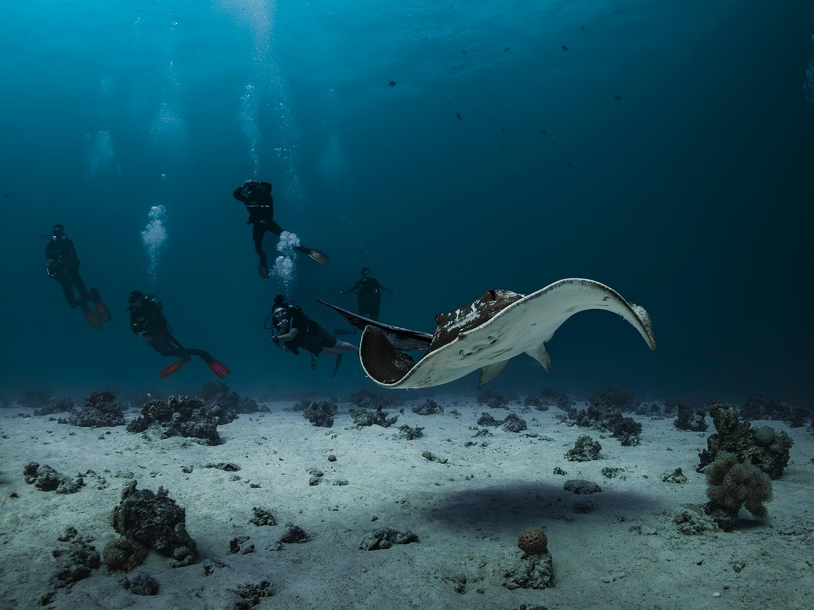

Potápění v Pule
Soukromé ponory s průvodcem v čisté vodě jižní Istrie, přizpůsobené vaší úrovni.
- Skupiny
- Soukromé nebo malé
- Úrovně
- Od začátečníků po certifikované
- Vybavení
- Zajištěno
- Průvodci
- Profesionální
Co se skrývá pod hladinou
Jadran u Puly nabízí skalnaté útvary porostlé mořskou trávou, malé jeskyně a bohatý podmořský život: pestrobarevné ryby, mořské koníky, ježovky a s trochou štěstí i chobotnici ve skalní štěrbině. Potápíme se v soukromých nebo malých skupinách, s profesionálním vedením a vybavením.

Proč se potápět s námi
Malé skupiny
Více pozornosti pro každého potápěče.
Profesionální průvodci
Instruktoři, kteří potápěčské lokality dobře znají.
Flexibilní program
Ponory, které zapadnou do vaší dovolené.
Všechny úrovně
Vhodné pro začátečníky i zkušené potápěče.
Jste v potápění noví?
Potápění je při správném provedení bezpečné. Začátečníci absolvují kurz u uznávané organizace, jako je PADI, NAUI nebo SSI, a nikdy se nepotápějí sami. Pod vodou nikdy nezadržujte dech, vystupujte pomalu a vyrovnávejte tlak včas. Pokud certifikát ještě nemáte, zeptejte se, co je ve vašem termínu možné.
- Soukromé ponory s průvodcem
- Malé skupiny
- Začátečníci i certifikovaní potápěči
- Vybavení a vedení zajištěno
Před ponorem
Sdělte nám svou certifikaci
A kdy jste se naposledy potápěli, abychom vše rozumně naplánovali.
Jezte střídmě, pijte vodu
Před potápěním se vyhněte těžkému jídlu.
Nelétejte hned po ponoru
Zeptejte se nás, jak dlouho po posledním ponoru je třeba před letem počkat.
Často kladené otázky
Mohou se s vámi potápět začátečníci?
Je v ceně vybavení?
Potápíte se v malých skupinách?
Proč na této stránce není pevná cena ponoru?
Chcete si rezervovat místo?
Pošlete nám termín a počet osob. Ověříme volnou kapacitu a odpovíme do 24 hodin.